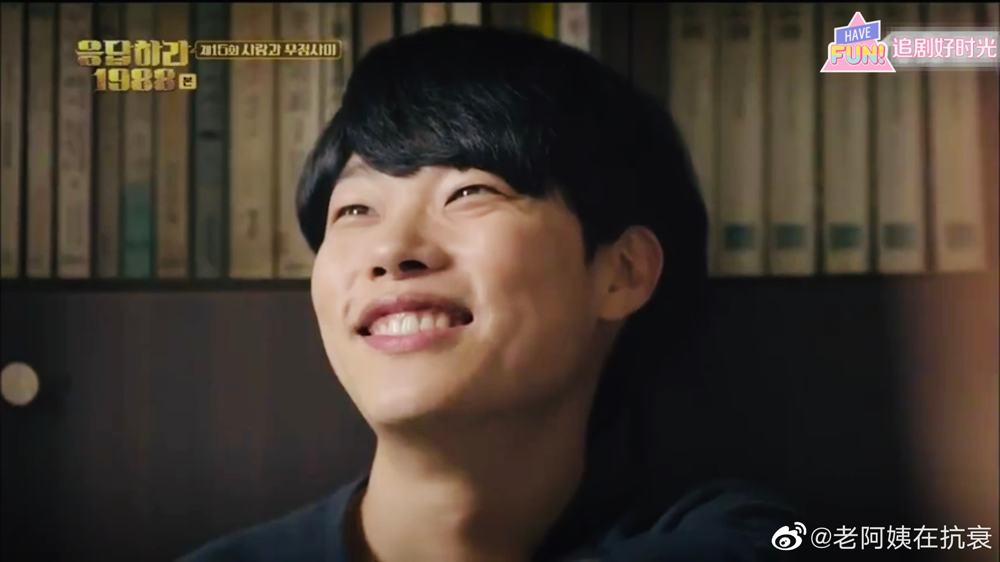

这几天在二刷《请回答1988》，跟着剧情又哭又笑的，是特别Happy的消遣。而且，边刷剧边吐槽，感觉回到了以前很多人在一个屋里边看剧边讨论的场景，看剧后的聊天才是最有意思的环节。
@老阿姨在抗衰: 请回答1988
请回答1988
第15集 高情商的基础是高智商
经常有人嘲笑说，高智商有什么用？高智商的人经常没情商。这真是对情商的极大误解。
这集里，阿泽受到善宇点播，说喜欢是能从眼睛里看出来的，于是他成为了双龙洞里第一个发现正焕喜欢德善的人。
宝拉已经决定追求自己的学业，犹豫不知道怎么跟善宇开口。善宇先问出是不是想分手？宝拉善宇能沟通得很好，跟这俩人都是学霸也有关系，有些话不需要说那么直白，几乎是一点就透。
高智商能做出成就，往往是因为他们很聚焦，只要自己关注的事情，就一定能做好。之前剧集里有阿泽不能正确感知德善情绪的情节，但是当他想去了解朋友时，他就可以用洞悉一切的观察力，超高智力来分析，迅速获得事实真相。
很多时候，高智商的人在其它人眼里，显得没情商，原因往往是他们不在意。不在意你是不是觉得他们好，不在意你是不是觉得他们强。而在高智商人在意的领域里，他们分分钟可以碾压你。
蠢人就不要谁便评论别人有智商没情商了。
第15集 高情商的基础是高智商
经常有人嘲笑说，高智商有什么用？高智商的人经常没情商。这真是对情商的极大误解。
这集里，阿泽受到善宇点播，说喜欢是能从眼睛里看出来的，于是他成为了双龙洞里第一个发现正焕喜欢德善的人。
宝拉已经决定追求自己的学业，犹豫不知道怎么跟善宇开口。善宇先问出是不是想分手？宝拉善宇能沟通得很好，跟这俩人都是学霸也有关系，有些话不需要说那么直白，几乎是一点就透。
高智商能做出成就，往往是因为他们很聚焦，只要自己关注的事情，就一定能做好。之前剧集里有阿泽不能正确感知德善情绪的情节，但是当他想去了解朋友时，他就可以用洞悉一切的观察力，超高智力来分析，迅速获得事实真相。
很多时候，高智商的人在其它人眼里，显得没情商，原因往往是他们不在意。不在意你是不是觉得他们好，不在意你是不是觉得他们强。而在高智商人在意的领域里，他们分分钟可以碾压你。
蠢人就不要谁便评论别人有智商没情商了。
- 